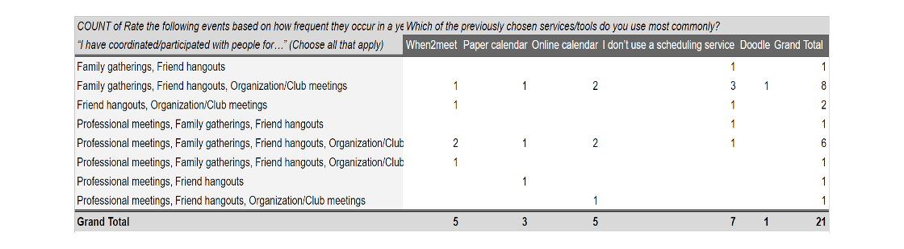
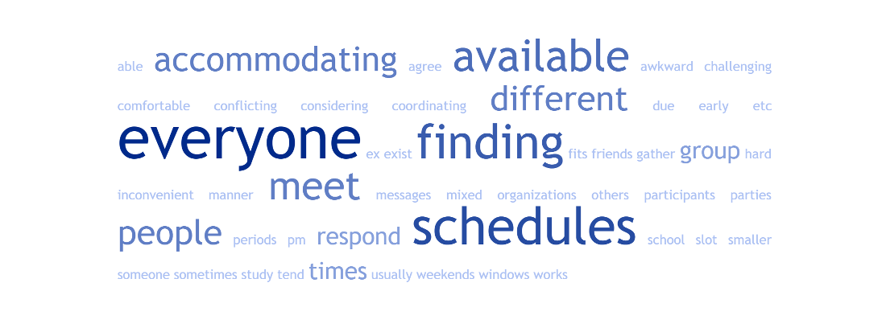
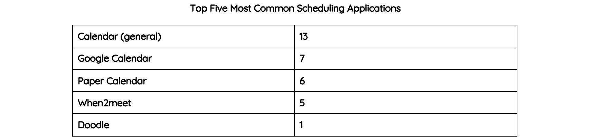
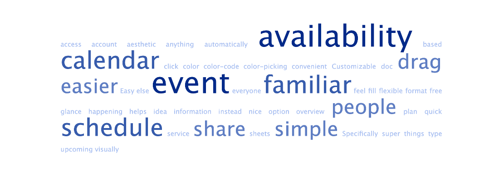
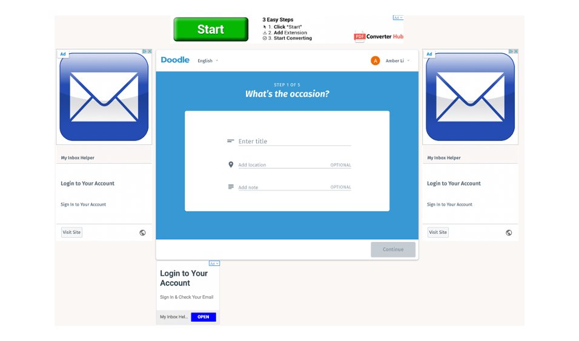

Doodle Redesign
Role
UX / UI Designer
Timeline
10 weeks (January 2019 to March 2019)
Context
University of California, Irvine IN4MATX 132
Tools
Adobe XD and Google Forms
Project Brief
Doodle is an online calendar tool best utilized for time management and planning group sessions. Targeted for people that need to collaborate, this product allows groups to set their availability and displays what times are most convenient for the majority of the team. Doodle has made it easier to solve the problem of figuring out the best time to meet, but it isn't a top choice for scheduling purposes. Therefore, my team and I wanted to create a redesign for Doodle using a user-centered design process. We conducted surveys, interviews, and usability tests and designed redesigned mockups based on our findings.
My Role
My role was a UX Designer. I collaborated with 5 other group members to complete this redesign. I was involved in the surveying and interviewing processes to understand how users schedule with others. I synthesized the data and helped determine which features needed redesigning. I drew sketches and created high-fidelity mockups to reflect the changes.
Research
Study ObjectivesOur study objectives are specific things that we want to learn from our user research. They consist of the high-level questions that will guide our research and help us to understand our users and their experiences.
Our in-person interview was comprised of two sections: general questions and application-specific questions. We also included a section for people who had no familiarity with scheduling applications. On average, our in-person interviews were 30 minutes long.
Our survey questions were very similar to our in-person interview questions, but rephrased to obtain quantitative data. We asked questions that considered the individual’s position when coordinating (e.g. planner, participant, or both) to see if there were any relationships with their position and methods or preferred application.
We focused on three tasks:
- Creating a poll
- Editing a poll
- Closing the poll and exporting data
We chose to create a poll as a task because it serves as a basis for what users primarily use Doodle for. Then, we wanted to edit a poll to see the sequence of actions and how it differs from a poll creation. Our last task focused on closing the poll and exporting it to Excel so that poll creators can view the responses on a spreadsheet document.
To identify any potential usability problems, we answered a set of four questions per each tasks’ step. We recorded any potential errors or usability issues that we ran through when performing these tasks.
Our goals for the usability tests were to see how participants utilize different views and functionalities for each task. We focused on six tasks, half were focused on poll creation and half on poll participation.
Our first task had users create a text poll to make a tally of cake flavors for an office party. This allowed users to use Doodle as a poll service in addition to an event scheduling tool. The next two tasks asked the participants to create scheduled slot times with certain restrictions. The last three tasks were simple; they prompted the participants to pick preferred options in different types of polls.
Findings
User ResearchMany participants had a preferred system for coordinating meetings with others. About 50% of participants said they directly message people to coordinate plans instead of using a scheduling service. We reached the conclusion that these groups are small enough that finding a time to meet is enough without a scheduling application. Of the participants that coordinate with a larger number of people, they used a scheduling service, such as when2meet. This brought an interesting notion to our research that people use scheduling applications for more “business-like” meetings and direct message for casual groupings.
Figure 1 below shows that people who have coordinated and/or participated in certain events have a preferred system they use in order to coordinate specific times to meet up. Those who had participated in a number of different types of events generally had used a scheduling service in order to keep track of their availability.
Because group meetings depend on the participants, meeting coordinators have a difficult time with uncooperative people. This could be a limitation in the other members’ schedules because of available meeting times. We came to this conclusion from asking “What is challenging about coordinating a time to meet with others?. Their responses can be seen in Figure 2 with a world cloud.
Agreeing on the date is another major problem, as some people can be unresponsive or have a lack of commitment. In this context, we define scheduling as coordinating group meetings using a given application. There are some pain points that are attributed to the features (or lack of) in a certain application. One participant said that having to coordinate across application platforms to view availabilities is hard when individuals’ schedules change.
Another sentiment a few of the participants interviewed expressed is that they like to keep their schedule organized. Many said that they view their schedule or calendar on a weekly, sometimes even hourly basis. We concluded that they want to organize their schedules in such a way that would make it easy to know when they are available for group meetings. A good portion of the participants use Google Calendar or a physical planner to keep track of their availability. Of the 19 participants that use a scheduling application, more than half used a physical/digital calendar, seen in Figure 3.
The ability to sync schedules across multiple platforms interested the interviewees. One of the interview questions read, “Is calendar integration important to you?” to which five of the thirteen participants responded yes. The team deduced that the reason for interest comes from recurring events that students have, such as club meetings, classes, and group events. Users need to keep track of their personal schedule, and an online calendar was the most common scheduling tool among respondents.
We asked our participants if they would like to have notifications when using a scheduling application. To which most of our interviewees said that they prefer to have notifications (high frequency words “automatically” and “upcoming” are displayed in Figure 4). However, some stated that they preferred application notifications, and some stated that they preferred email notifications. One participant even stated that they wished their current scheduling application had notifications, so that they would not have to constantly refresh the page to see if there were any updates to their calendar (high frequency word “calendar” shown in Figure 4). From this, we uncovered that users do like to have notifications, however, what kind of notifications and at what frequency should be customizable to each user.
Overall, we found Doodle is a system that relies too heavily on the user’s knowledge of similar systems. As a first time user, there is not enough feedback given by the system to guide the user in the right direction. If the user has an error, the system does not inform the user of any problems. An example of this is if you leave the Doodle empty, the “Continue” button will be grayed out but not state the reason why.
The visual design pain points that our group discovered occurred on both the Poll Creator and the Participant side. One of the key issues that each of our six usability test participants identified was Doodle’s use of advertising within the user experience. While ad placement plays a key role in developing revenue for a company, it should not disturb the user while they are navigating through a website.
Figure 5 displays an example of one of Doodle’s landing pages when creating a poll. Not only are they quite distracting, but the size of the advertisements themselves are quite large, especially the advertisements on the users left and right side. One of the usability test participants accidentally clicked an advertisement twice during their experience, once when creating a poll and once when voting on a poll. A simple mistake like this leads to pop ups and user frustration, and can overall be quite intrusive.
Another main visual design issue that we discovered was the use of overlapping time slots when creating and voting on a poll in week view. Figure 6 and 7 show examples of what overlapping times will look like in week view from a poll creator and a participant respectively. When a user is trying to create a series of available times and then have participants vote on those times, the overlap makes it quite difficult to see when the time slot ends. The inability to see when a time slot ends could lead a user to select the incorrect time. One of our usability test participants stated, “For the most part it was simple but visuals on calendar page were confusing especially when you overlap slots”. This type of overlap can lead to user error and can make it quite difficult to review, especially if a poll creator is giving several time slot options on several days.